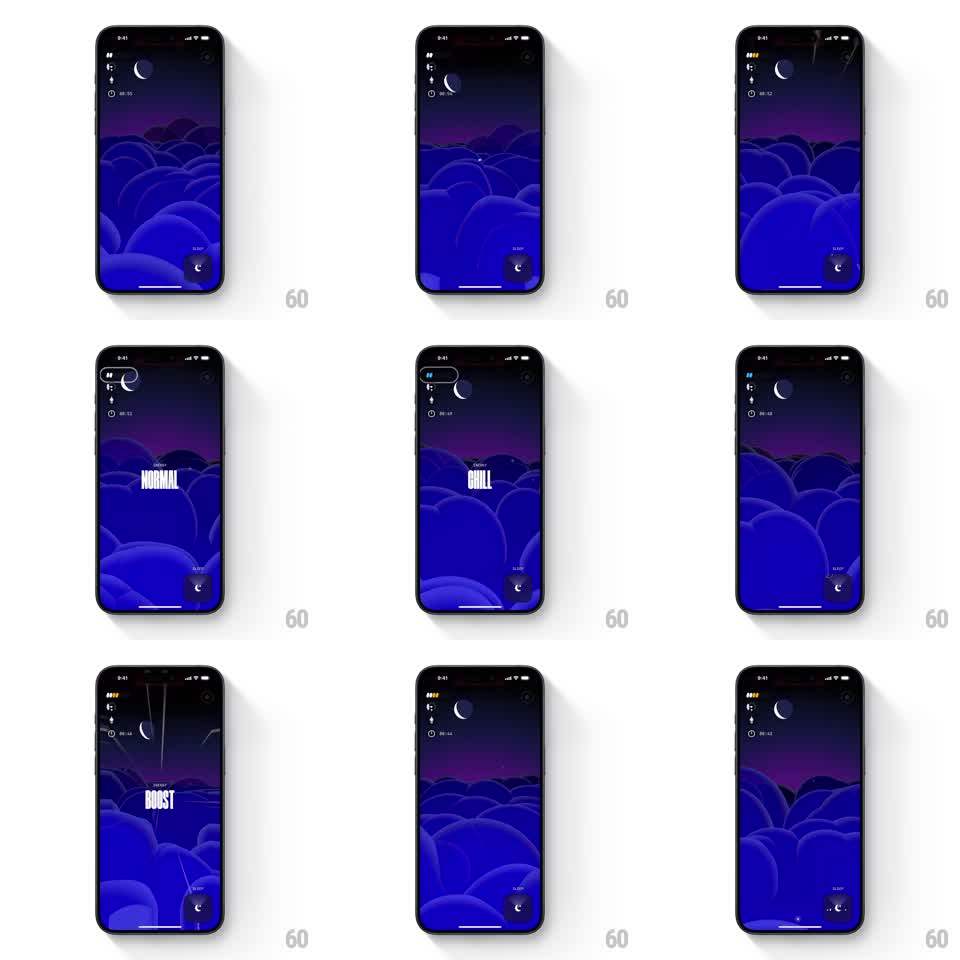

Media
Frame-by-frame

Rebuild this interaction 1:1: Not Boring Vibes' energy swipe - swiping morphs the night-cloud scene through energy states, each stamped with huge condensed type ("NORMAL", "CHILL", "BOOST") as the palette and motion shift.

Rebuild this interaction 1:1: Not Boring Vibes' energy swipe - swiping morphs the night-cloud scene through energy states, each stamped with huge condensed type ("NORMAL", "CHILL", "BOOST") as the palette and motion shift.
## Integration
Integration: stack-agnostic spec - springs given as stiffness/damping, timed motions as duration + curve; map every value to your framework and animation library of choice.
## Scene
Deep blue night scene: rolling stylized clouds, a crescent moon, purple horizon glow. HUD chips top-left, a sleep button bottom-right. Swiping vertically (or horizontally) cycles energy states; each state change slaps a giant condensed white label on center ("NORMAL", "CHILL", "BOOST") and re-grades the scene - BOOST adds speed lines and faster cloud drift.
## Motion spec
Pattern: swipe-cycled states with typographic stamps.
- Swipe: the scene slides with the finger (1:1, ~30% travel), and at the threshold the next state commits.
- The state label stamps in: condensed caps scale 1.5 to 1.0 (180ms, hard ease-out), holds ~700ms, fades (200ms).
- The scene morphs with the swipe: cloud shapes ease to the new state's composition (400ms, ease-out), palette crossfading (BOOST pushes saturation and adds white speed streaks from the top; CHILL dims and slows).
- Ambient motion speed follows the state: cloud drift and parallax run at ~0.5x in CHILL, 1x in NORMAL, ~2.5x in BOOST.
- HUD pips update to the active state with a 150ms tick.
## Calibration
- The label is a stamp, not a title - it should hit hard and get out of the way.
- Palette and speed change with the label, not after; the state must read in one glance.
## Reduced motion
States crossfade; label fades in without scale.
## Don't miss
- The clouds keep their illustrated volume across states - re-grade and re-compose, never swap to a flat color.
- Speed lines belong to BOOST only; their absence in lower states is part of the contrast.